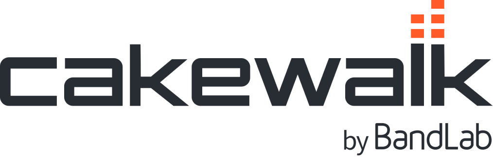

On this page, I’ll take you through how to set up a DAW called Cakewalk by BandLab. It’s completely free and rather simple to set up. Let’s get right into it.

Install steps
- Download Cakewalk from BandLab.
- Run the installer and follow the setup wizard.
- Open Cakewalk once to confirm it launches.
- Install one free instrument pack (next).
Great! You're set up and ready to start using the program. Next, we'll cover the basics.
Plugins
To use the DAW, you need to have digital instruments (or record actual instruments), VSTS, and effects. There’s many many many free plugins available that you could search around for, however, for the sake of simplicity, I’ll be using a single plugin called LABS by Spitfire Audio.
LABS
LABS is a free plugin with a lot of digital instruments and effects all in one. You’ll have to download the plugin and then through the plugin install the free instruments that you want, there’s paid instruments available as well but we won’t need them. Click on the LABS logo to the right to go to the download website, you’ll have to make another account.